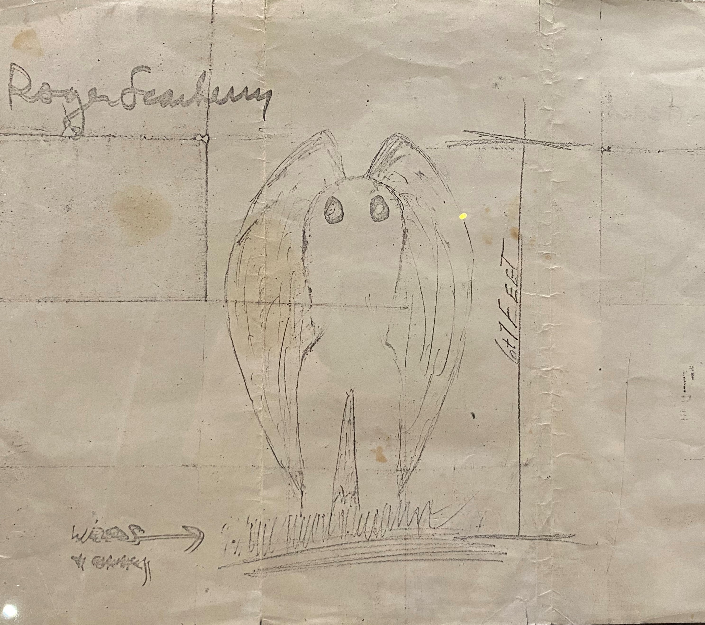
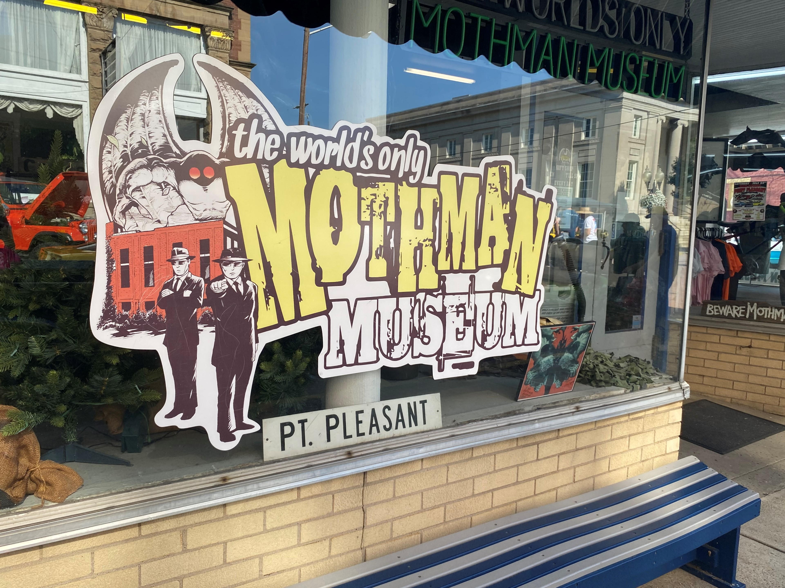

Iconic West Virginian legend that has spread across the USA and the internet.
Subject of a museum, statue, festival, themed foods, and tours in Point Pleasant.
Why study the Mothman?
Urban legends as vehicles for cultural meaning.
Understand how a lasting narrative is created, and why a narrative changes.
Mothman is at its core a local urban legend, which has been scaled to be told for larger audiences.
The Mothman legend is vulnerable to fragmentation and change, as seen in the various forms of the Mothman.
Research Questions
How has the Mothman narrative changed over time?
What has led to these changes?
What is the purpose of the Mothman legend?
Why does the Mothman matter?
How Do You Study a Mothman? - Methodology
I focused on several key stages to building the corpus of the legend, which are described in detail later.
I examined the stories popularized in these stages, their impact,
and possible cultural relevance. Below is how I went about gathering resources for my reserach, and how I assembled it at the end.
Remote Study:
Digital newspaper archives, books, movies, TV shows, and video games featuring the Mothman
Field Study:
Visiting Point Pleasant, WV as a tourist
West Virginia Department of Arts, Culture, and History: the Archives Library at the Culture Center in Charleston, WV
At each stage of the timeline, the general perception of Mothman changed as
new elements were added or removed from the popular telling of the story.
Evolution of The Mothman
1966 - The First Mothman Sighting
The Scarberry-Mallette sighting takes place. The bird monster is named "Mothman" by an unknown journalist.
Theorists first suggest the Mothman was a sandhill crane.

Sketch of the Mothman by Roger Scarberry based on his own account, on display at The Mothman Museum in Point Pleasant, WV. Photo by author.A lesser sandhill crane. Frankyboy5 at en.wikipedia, Public domain, via Wikimedia Commons
1967 - Silver Bridge Collapse
Tragedy brings the legend to a halt. Point Pleasant tells narratives of grief.
Silver Bridge upon completion in 1928. Public Domain, LinkSilver Bridge Collapsed, Ohio side. Public Domain, Link
1975 - The Mothman Prophecies novel is published
John A. Keel brings the Mothman and Point Pleasant back into public eye.
His novel was aimed at American conspiracy theorists,
connecting Mothman to a global conspiracy, UFO phenomena, and the Silver Bridge collapse.
The film revives the Mothman legend again based on Keel's novel but
modified for a general American audience.
Fears of the uncertainty of modern times and survilance play a larger role here.
Further incorporates the bridge collapse into the narrative while removing the Men in Black.
The rise of Mothman tourism in Point Pleasant, and the spread of the Mothman myth via the internet.
Mothman tourism spikes after the film's release, resulting in the growth of Mothman based tourism industry in Point Pleasant.
The internet helps spread the legend further, morphing the Mothman into new shapes as it enters new spheres.
Above is the Buzzfeed Unsolved video:
The Search for the Mysterious Mothman.A cup of Mothman blend coffee and a Mothman cookie from The Coffee Grinder in Point Pleasant, WV. Photo by author.Tales of the Unknown, curated and edited by Akira B., cover by Zab Rodriguez, published by WildStar Press. Available here for purchase.

The World's Only Mothman Museum. Photo by author. Point Pleasant, WV.
What the Mothman Means - Conclusion
Photo by Sonja, 2011 Mothman Festival.
The Mothman is about community.
From a cultural perspective, the Mothman is a community builder. It means different things to different people,
much like how it looks different to different people, but it unites people under a shared concept nonetheless.
That is the beauty of the Mothman and what makes stories like it important.
We bring the stories we are told in our childhood homes to adulthood, like markers of identity.
For it to fragment so much is not necessarily bad. It means the story is migrating.
The Mothman legend is being told and retold for new audiences, with new perspectives to view it from.
It's expected for the story to fragment and evolve as it migrates. In fact, it's even
more expected from a legend like the Mothman which was so vauge to begin with,
you could create whatever monster you wanted from it based on the elements you liked best.
American audiences wanted a mystery and a monster, and that's what the Mothman is.
There's so much room for interpretation that the creature can be
anything you want. It can serve any role society needs: a terrifying monster, a tourist attraction, a scapegoat,
an allegory for communism, a dark prophet, or even the perfect boyfriend. The main identifying factors are its
red eyes and dark wings, but it's easily recognizable to those who look for it. And if you are looking for it,
you'll find Mothman everywhere. Any story of a dark figure with red eyes could be added to the mythos, and thus
further fragment the narrative. At a glance, this array of meaning may make Mothman seem pointless, but that is
why it matters. The purpose of Mothman is to be mysterious and relevant, to draw attention to and create mysteries
within daily life. As time changes, the Mothman changes as well, which begs the question, what stories will we be
telling in 20 years? Perhaps they will be the same monster stories, just rebooted to be more relevant.


{kind=link}